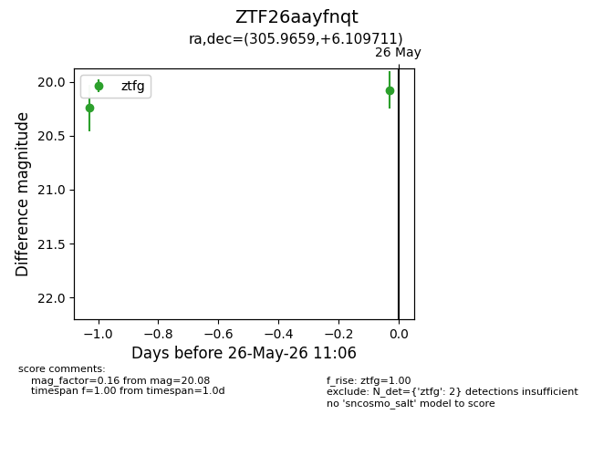
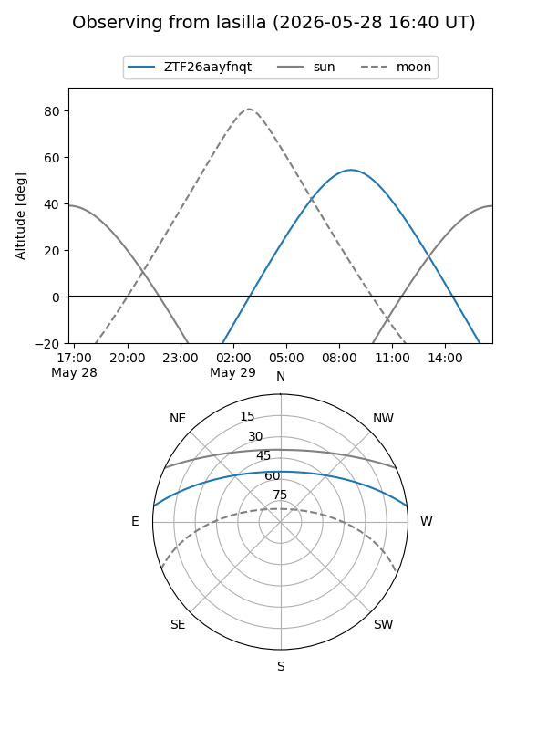
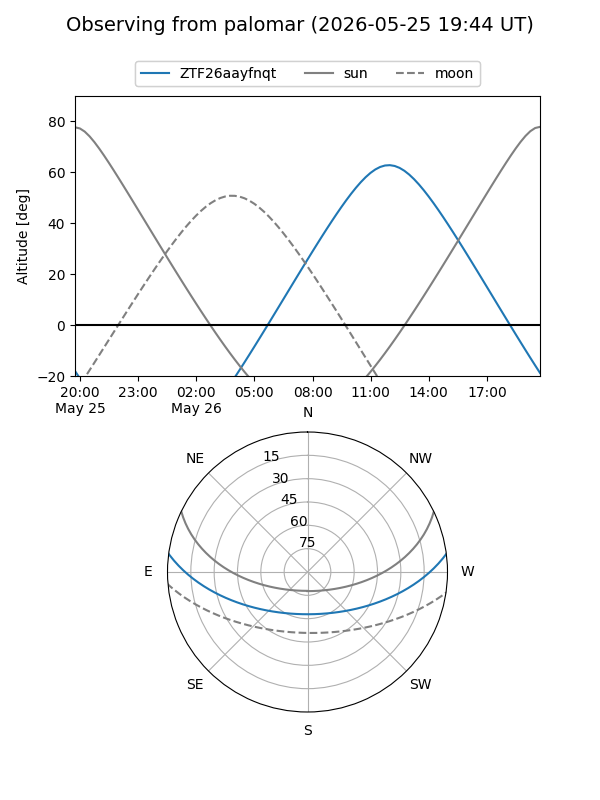
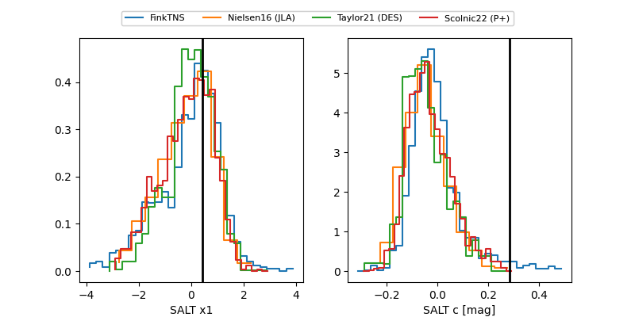

ZTF26aayfnqt
Target ZTF26aayfnqt at 2026-05-26 11:10
Aliases and brokers:
lsst-FINK: link
lsst-Lasair: link
lsst-ALeRCE: link
ztf-FINK: link
ztf-Lasair: link
ztf-ALeRCE: link
alt names
ZTF26aayfnqt (ztf,fink_ztf)
Coordinates:
equatorial (ra, dec) = 305.9659,+6.10971
equatorial (HMS+DMS) = 20:23:51.81,+06:06:34.96
galactic (l, b) = (49.5327,-17.38263)
Flags:
Photometry:
last ztfg=20.08
2 ztfg detections
Lightcurve

Visibility


Additional plots
